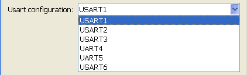
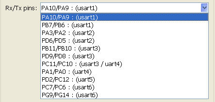
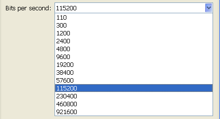
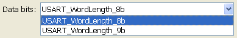
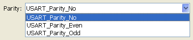
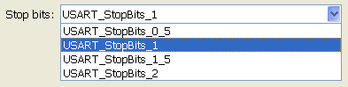
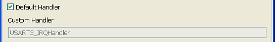

USART configuration model
Model used to configure USART1 to USART6.
Contents
S-Function
Nb Input: 0
Nb Output: 0

Parameters
Set USART communication parameters.

Usart configuration
Usart/Uart name to configure

Rx/Tx pins
Rx/Tx GPIOs usart pins are automatically configured. Pins selection for selected USART name.

Bits per second
Baud rate selection.

Data bits
Communication data bits number. Can be 8 or 9 bits.

Parity
Communication parity setting. None, Even or Odd

Stop bits
Communication stop bits setting.

Enable flow control
Hardware flow control communication enable.
Initialisation to default setting
Initialize default setting communication parameters value.
Interrupt Rcv/Send Enable
Set if inerruptions are used to Rcv and/or Send char. Rcv/Send interrupt selection are independant.
Default Handler
When Rcv or Send interrupt is selected, it is possible to modify function handler name. Take care to put same name as named defined in startup file.

Example
Send char string to PC HyperTerminal using USART3.
This example is based on STM3240G-EVAL board.
Analog-to-digital converter (ADC3) reads potentiometer value from PortF-Pin9.
This value is converted into char string and sent through USART3. Open USART example

USART3 configuration must be the same as PC HyperTerminal one.

Send value using USART3